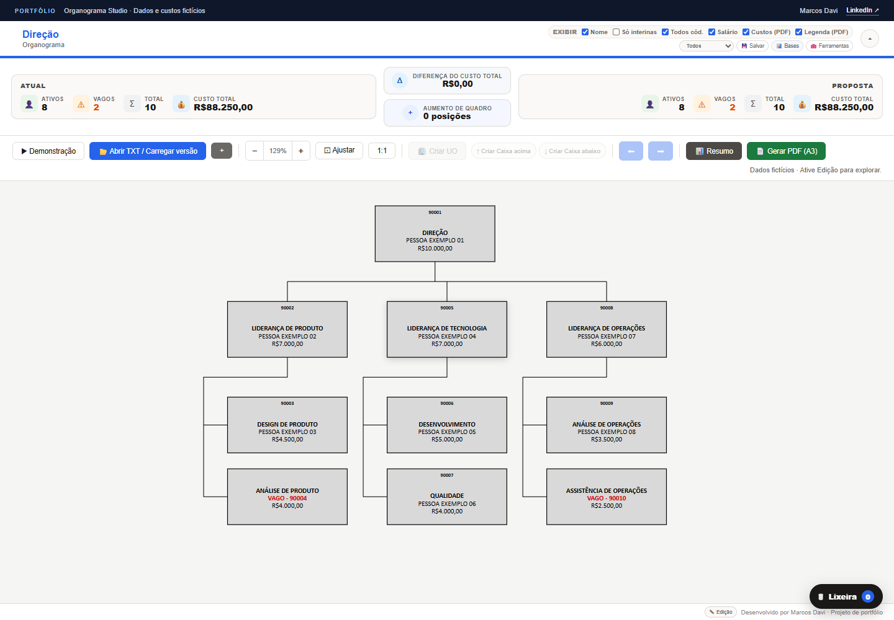
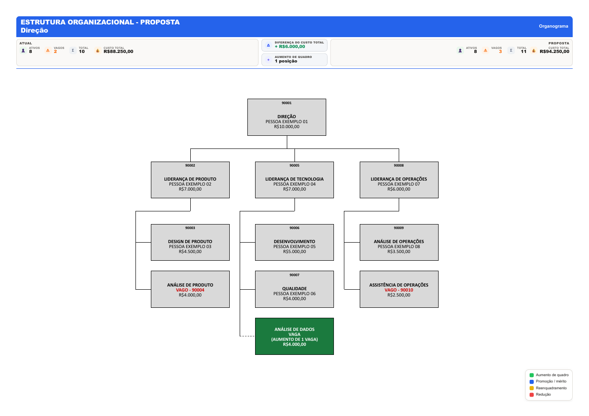

Visualização estrutural
Representa relações hierárquicas, posições ocupadas e vagas em uma leitura visual.
PROJETO DE PORTFÓLIO · MARCOS DAVI
O Organograma Studio transforma estruturas organizacionais em uma experiência visual para explorar cenários, acompanhar indicadores e preparar propostas de mudança.
Demonstrações utilizam exclusivamente informações fictícias.

DEMONSTRAÇÃO LIMITADA
A demonstração usa telas prontas e dados inteiramente fictícios. Importação, edição, cálculos, salvamento e geração de arquivos permanecem desativados.

VISÃO DO PRODUTO
O projeto nasceu para organizar informações complexas de equipe em uma interface direta. A proposta combina visualização hierárquica, simulação de mudanças e consolidação de indicadores.
Esta página apresenta o conceito e a experiência do produto. O código-fonte e os componentes internos não fazem parte da distribuição pública.
CAPACIDADES
Representa relações hierárquicas, posições ocupadas e vagas em uma leitura visual.
Apoia a comparação entre estruturas atuais e propostas de reorganização.
Reúne informações de quadro e custos para facilitar análises e apresentações.
Prepara organogramas, resumos e documentos estruturados para apoiar o fluxo decisório.
CONSTRUÇÃO
APRESENTAÇÃO
Entre em contato para conversar sobre o projeto, possibilidades de aplicação e uma demonstração guiada.
Conversar pelo LinkedIn